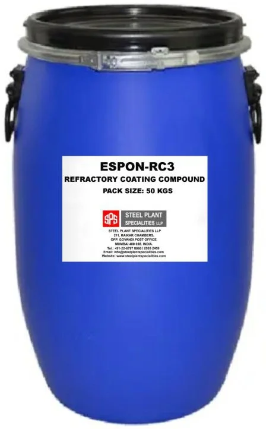

SPS refractory coatings are applied to the hot face of furnace linings to increase emissivity — reflecting heat back into the furnace — and protect against thermal shock cracking. This reduces fuel consumption, cuts furnace heat-up time, and extends refractory lining life in rolling mill, billet re-heating, and sealed quench furnaces.

ESPON-RCP
ESPON-RCP
Zircon-based refractory coating for furnace linings. Reflects heat back into the furnace and prevents thermal shock cracking — can cut next-morning furnace startup time by up to 1.5 hours.

ESPON-RC3
ESPON-RC3
Protective coating for refractory brick lining in furnaces. Reduces thermal conductivity and reflects heat back into the furnace — lab-verified to cut thermal conductivity by up to 35.71% when both sides of the lining are coated.